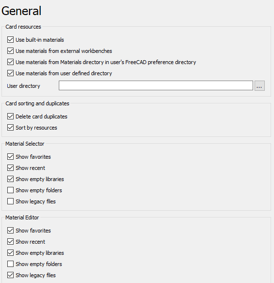
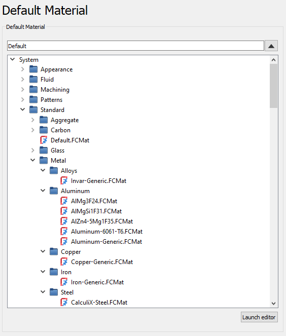

Material Preferences/fr
Introduction
Les préférences pour l' atelier Material peuvent être trouvées dans l'éditeur de préférences. Dans le menu, sélectionnez Édition → Préférences... puis
atelier Material peuvent être trouvées dans l'éditeur de préférences. Dans le menu, sélectionnez Édition → Préférences... puis  Material.
Material.
Il y a deux pages : Général et Matériau par défaut.
Général
{kind=link}

Sources des paramètres
- Utiliser des matériaux intégrés : si coché, les matériaux intégrés de FreeCAD seront listés.
- Utiliser des matériaux des ateliers externes : si coché, les matériaux ajoutés par les ateliers externes (extension) seront listés.
- Utiliser les matériaux du répertoire des matériaux dans le répertoire des préférences de l'utilisateur de FreeCAD : si coché, les matériaux du répertoire des préférences de FreeCAD seront listés.
- Utiliser des matériaux du répertoire défini par l'utilisateur : si coché, les matériaux du répertoire spécifié seront listés.
- Répertoire de l'utilisateur : source de matériaux supplémentaires.
Tri des jeux de paramètres et doublons
- Supprimer les doublons de jeux de paramètres : si coché, les doublons sont supprimés de la liste.
- Trier par ressources : si coché, les matériaux sont affichés triés par leurs ressources (emplacements). Si la case n'est pas cochée, les matériaux sont triés par leur nom.
Sélecteur de matériaux
- Afficher les matériaux favoris : si coché, les matériaux ajoutés aux favoris sont affichés dans le sélecteur de matériaux.
- Afficher les matériaux récents : si coché, les matériaux récemment utilisés sont affichés dans le sélecteur de matériaux.
- Afficher les bibliothèques vides : si coché, les bibliothèques vides sont affichées dans le sélecteur de matériaux.
- Afficher les dossiers vides : si coché, les dossiers vides sont affichés dans le sélecteur de matériaux.
- Afficher les fichiers historiques : si coché, les fichiers hérités sont affichés dans le sélecteur de matériaux.
Éditeur de matériaux
- Afficher les matériaux favoris : si coché, les matériaux ajoutés aux favoris sont affichés dans l'éditeur de matériaux.
- Afficher les matériaux récents : si coché, les matériaux récemment utilisés sont affichés dans l'éditeur de matériaux.
- Afficher les bibliothèques vides : si coché, les bibliothèques vides sont affichées dans l'éditeur de matériaux.
- Afficher les dossiers vides : si coché, les dossiers vides sont affichés dans l'éditeur de matériaux.
- Afficher les fichiers historiques : si coché, les fichiers hérités sont affichés dans l'éditeur de matériaux.
Matériau par défaut
{kind=link}

Matériau par défaut
- Sélecteur de matériau : spécifie le matériau utilisé par défaut dans FreeCAD.
- Lancer l'éditeur : ouvre l'éditeur de matériaux.
- Getting started
- Installation: Download, Windows, Linux, Mac, Additional components, Docker, AppImage, Ubuntu Snap
- Basics: About FreeCAD, Interface, Mouse navigation, Selection methods, Object name, Preferences, Workbenches, Document structure, Properties, Help FreeCAD, Donate
- Help: Tutorials, Video tutorials
- Workbenches: Std Base, Assembly, BIM, CAM, Draft, FEM, Inspection, Material, Mesh, OpenSCAD, Part, PartDesign, Points, Reverse Engineering, Robot, Sketcher, Spreadsheet, Surface, TechDraw, Test Framework
- Hubs: User hub, Power users hub, Developer hub